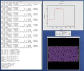
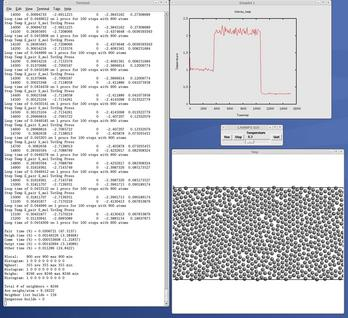
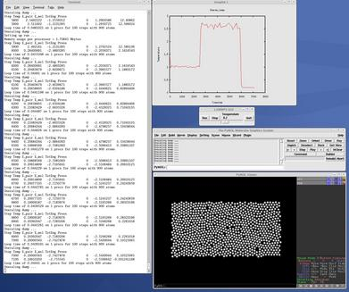

This section describes how to build and use LAMMPS via a Python interface.
The LAMMPS distribution includes some Python code in its python directory which wraps the library interface to LAMMPS. This makes it is possible to run LAMMPS, invoke LAMMPS commands or give it an input script, extract LAMMPS results, an modify internal LAMMPS variables, either from a Python script or interactively from a Python prompt.
Python is a powerful scripting and programming language which can be used to wrap software like LAMMPS and other packages. It can be used to glue multiple pieces of software together, e.g. to run a coupled or multiscale model. See this section of the manual and the couple directory of the distribution for more ideas about coupling LAMMPS to other codes. See Section_start 4 about how to build LAMMPS as a library, and this section for a description of the library interface provided in src/library.cpp and src/library.h and how to extend it for your needs. As described below, that interface is what is exposed to Python. It is designed to be easy to add functions to. This has the effect of extending the Python inteface as well. See details below.
By using the Python interface LAMMPS can also be coupled with a GUI or visualization tools that display graphs or animations in real time as LAMMPS runs. Examples of such scripts are inlcluded in the python directory.
Two advantages of using Python are how concise the language is and that it can be run interactively, enabling rapid development and debugging of programs. If you use it to mostly invoke costly operations within LAMMPS, such as running a simulation for a reasonable number of timesteps, then the overhead cost of invoking LAMMPS thru Python will be negligible.
Before using LAMMPS from a Python script, the Python on your machine must be "extended" to include an interface to the LAMMPS library. If your Python script will invoke MPI operations, you will also need to extend your Python with an interface to MPI itself.
Thus you should first decide how you intend to use LAMMPS from Python. There are 3 options:
(1) Use LAMMPS on a single processor running Python.
(2) Use LAMMPS in parallel, where each processor runs Python, but your Python program does not use MPI.
(3) Use LAMMPS in parallel, where each processor runs Python, and your Python script also makes MPI calls through a Python/MPI interface.
Note that for (2) and (3) you will not be able to use Python interactively by typing commands and getting a response. This is because you will have multiple instances of Python running (e.g. on a parallel machine) and they cannot all read what you type.
Working in mode (1) does not require your machine to have MPI installed. You should extend your Python with a serial version of LAMMPS and the dummy MPI library provided with LAMMPS. See instructions below on how to do this.
Working in mode (2) requires your machine to have an MPI library installed, but your Python does not need to be extended with MPI itself. The MPI library must be a shared library (e.g. a *.so file on Linux) which is not typically created when MPI is built/installed. See instruction below on how to do this. You should extend your Python with the a parallel versionn of LAMMPS which will use the shared MPI system library. See instructions below on how to do this.
Working in mode (3) requires your machine to have MPI installed (as a shared library as in (2)). You must also extend your Python with a parallel version of LAMMPS (same as in (2)) and with MPI itself, via one of several available Python/MPI packages. See instructions below on how to do the latter task.
Several of the following sub-sections cover the rest of the Python setup discussion. The next to last sub-section describes the Python syntax used to invoke LAMMPS. The last sub-section describes example Python scripts included in the python directory.
Before proceeding, there are 2 items to note.
(1) The provided Python wrapper for LAMMPS uses the amazing and magical (to me) "ctypes" package in Python, which auto-generates the interface code needed between Python and a set of C interface routines for a library. Ctypes is part of standard Python for versions 2.5 and later. You can check which version of Python you have installed, by simply typing "python" at a shell prompt.
(2) Any library wrapped by Python, including LAMMPS, must be built as a shared library (e.g. a *.so file on Linux and not a *.a file). The python/setup_serial.py and setup.py scripts do this build for LAMMPS itself (described below). But if you have LAMMPS configured to use additional packages that have their own libraries, then those libraries must also be shared libraries. E.g. MPI, FFTW, or any of the libraries in lammps/lib. When you build LAMMPS as a stand-alone code, you are not building shared versions of these libraries.
The discussion below describes how to create a shared MPI library. I suggest you start by configuing LAMMPS without packages installed that require any libraries besides MPI. See this section of the manual for a discussion of LAMMPS packages. E.g. do not use the KSPACE, GPU, MEAM, POEMS, or REAX packages.
If you are successfully follow the steps belwo to build the Python wrappers and use this version of LAMMPS through Python, you can then take the next step of adding LAMMPS packages that use additional libraries. This will require you to build a shared library for that package's library, similar to what is described below for MPI. It will also require you to edit the python/setup_serial.py or setup.py scripts to enable Python to access those libraries when it builds the LAMMPS wrapper.
From the python directory in the LAMMPS distribution, type
python setup_serial.py build
and then one of these commands:
sudo python setup_serial.py install python setup_serial.py install --home=~/foo
The "build" command should compile all the needed LAMMPS files, including its dummy MPI library. The first "install" command will put the needed files in your Python's site-packages sub-directory, so that Python can load them. For example, if you installed Python yourself on a Linux machine, it would typically be somewhere like /usr/local/lib/python2.5/site-packages. Installing Python packages this way often requires you to be able to write to the Python directories, which may require root priveleges, hence the "sudo" prefix. If this is not the case, you can drop the "sudo". If you use the "sudo" prefix and you have installed Python yourself, you should make sure that root uses the same Python as the one you did the "install" in. E.g. these 2 commands may do the install in different Python versions:
python setup_serial.py install --home=~/foo python /usr/local/bin/python/setup_serial.py install --home=~/foo
Alternatively, you can install the LAMMPS files (or any other Python packages) in your own user space. The second "install" command does this, where you should replace "foo" with your directory of choice.
If these commands are successful, a lammps.py and _lammps_serial.so file will be put in the appropriate directory.
A shared library is one that is dynamically loadable, which is what Python requires. On Linux this is a library file that ends in ".so", not ".a". Such a shared library is normally not built if you installed MPI yourself, but it is easy to do. Here is how to do it for MPICH, a popular open-source version of MPI, distributed by Argonne National Labs. From within the mpich directory, type
./configure --enable-shared make make install
You may need to use "sudo make install" in place of the last line. The end result should be the file libmpich.so in /usr/local/lib.
IMPORTANT NOTE: If the file libmpich.a already exists in your installation directory (e.g. /usr/local/lib), you will now have both a static and shared MPI library. This will be fine for running LAMMPS from Python since it only uses the shared library. But if you now try to build LAMMPS by itself as a stand-alone program (cd lammps/src; make foo) or build other codes that expect to link against libmpich.a, then those builds may fail if the linker uses libmpich.so instead. If this happens, it means you will need to remove the file /usr/local/lib/libmich.so before building LAMMPS again as a stand-alone code.
From the python directory, type
python setup.py build
and then one of these commands:
sudo python setup.py install python setup.py install --home=~/foo
The "build" command should compile all the needed LAMMPS C++ files, which will require MPI to be installed on your system. This means it must find both the header file mpi.h and a shared library file, e.g. libmpich.so if the MPICH version of MPI is installed. See the preceding section for how to create a shared library version of MPI if it does not exist. You may need to adjust the "include_dirs" and "library_dirs" and "libraries" fields in python/setup.py to insure the Python build finds all the files it needs.
The first "install" command will put the needed files in your Python's site-packages sub-directory, so that Python can load them. For example, if you installed Python yourself on a Linux machine, it would typically be somewhere like /usr/local/lib/python2.5/site-packages. Installing Python packages this way often requires you to be able to write to the Python directories, which may require root priveleges, hence the "sudo" prefix. If this is not the case, you can drop the "sudo".
Alternatively, you can install the LAMMPS files (or any other Python packages) in your own user space. The second "install" command does this, where you should replace "foo" with your directory of choice.
If these commands are successful, a lammps.py and _lammps.so file will be put in the appropriate directory.
There are several Python packages available that purport to wrap MPI as a library and allow MPI functions to be called from Python.
These include
All of these except pyMPI work by wrapping the MPI library (which must be available on your system as a shared library, as discussed above), and exposing (some portion of) its interface to your Python script. This means they cannot be used interactively in parallel, since they do not address the issue of interactive input to multiple instances of Python running on different processors. The one exception is pyMPI, which alters the Python interpreter to address this issue, and (I believe) creates a new alternate executable (in place of python itself) as a result.
In principle any of these Python/MPI packages should work to invoke both calls to LAMMPS and MPI itself from a Python script running in parallel. However, when I downloaded and looked at a few of them, their docuemtation was incomplete and I had trouble with their installation. It's not clear if some of the packages are still being actively developed and supported.
The one I recommend, since I have successfully used it with LAMMPS, is Pypar. Pypar requires the ubiquitous Numpy package be installed in your Python. After launching python, type
>>> import numpy
to see if it is installed. If not, here is how to install it (version 1.3.0b1 as of April 2009). Unpack the numpy tarball and from its top-level directory, type
python setup.py build sudo python setup.py install
The "sudo" is only needed if required to copy Numpy files into your Python distribution's site-packages directory.
To install Pypar (version pypar-2.1.0_66 as of April 2009), unpack it and from its "source" directory, type
python setup.py build sudo python setup.py install
Again, the "sudo" is only needed if required to copy PyPar files into your Python distribution's site-packages directory.
If you have successully installed Pypar, you should be able to run python serially and type
>>> import pypar
without error. You should also be able to run python in parallel on a simple test script
% mpirun -np 4 python test.script
where test.script contains the lines
import pypar print "Proc %d out of %d procs" % (pypar.rank(),pypar.size())
and see one line of output for each processor you ran on.
Before using LAMMPS in a Python program, one more step is needed. The interface to LAMMPS is via the Python ctypes package, which loads the shared LAMMPS library via a CDLL() call, which in turn is a wrapper on the C-library dlopen(). This command is different than a normal Python "import" and needs to be able to find the LAMMPS shared library, which is either in the Python site-packages directory or in a local directory you specified in the "python setup.py install" command, as described above.
The simplest way to do this is add a line like this to your .cshrc or other shell start-up file.
setenv LD_LIBRARY_PATH
${LD_LIBRARY_PATH}:/usr/local/lib/python2.5/site-packages
and then execute the shell file to insure the path has been updated. This will extend the path that dlopen() uses to look for shared libraries.
To test if the serial LAMMPS library has been successfully installed (mode 1 above), launch Python and type
>>> from lammps import lammps >>> lmp = lammps()
If you get no errors, you're ready to use serial LAMMPS from Python.
If you built LAMMPS for parallel use (mode 2 or 3 above), launch Python in parallel:
% mpirun -np 4 python test.script
where test.script contains the lines
import pypar from lammps import lammps lmp = lammps() print "Proc %d out of %d procs has" % (pypar.rank(),pypar.size()), lmp pypar.finalize()
Again, if you get no errors, you're good to go.
Note that if you left out the "import pypar" line from this script, you would instantiate and run LAMMPS independently on each of the P processors specified in the mpirun command. You can test if Pypar is enabling true parallel Python and LAMMPS by adding a line to the above sequence of commands like lmp.file("in.lj") to run an input script and see if the LAMMPS run says it ran on P processors or if you get output from P duplicated 1-processor runs written to the screen. In the latter case, Pypar is not working correctly.
Note that this line:
from lammps import lammps
will import either the serial or parallel version of the LAMMPS library, as wrapped by lammps.py. But if you installed both via setup_serial.py and setup.py, it will always import the parallel version, since it attempts that first.
Note that if your Python script imports the Pypar package (as above), so that it can use MPI calls directly, then Pypar initializes MPI for you. Thus the last line of your Python script should be pypar.finalize(), to insure MPI is shut down correctly.
Also note that a Python script can be invoked in one of several ways:
% python foo.script % python -i foo.script % foo.script
The last command requires that the first line of the script be something like this:
#!/usr/local/bin/python #!/usr/local/bin/python -i
where the path points to where you have Python installed, and that you have made the script file executable:
% chmod +x foo.script
Without the "-i" flag, Python will exit when the script finishes. With the "-i" flag, you will be left in the Python interpreter when the script finishes, so you can type subsequent commands. As mentioned above, you can only run Python interactively when running Python on a single processor, not in parallel.
The Python interface to LAMMPS consists of a Python "lammps" module, the source code for which is in python/lammps.py, which creates a "lammps" object, with a set of methods that can be invoked on that object. The sample Python code below assumes you have first imported the "lammps" module in your Python script and its settings as follows:
from lammps import lammps from lammps import LMPINT as INT from lammps import LMPDOUBLE as DOUBLE from lammps import LMPIPTR as IPTR from lammps import LMPDPTR as DPTR from lammps import LMPDPTRPTR as DPTRPTR
These are the methods defined by the lammps module. If you look at the file src/library.cpp you will see that they correspond one-to-one with calls you can make to the LAMMPS library from a C++ or C or Fortran program.
lmp = lammps() # create a LAMMPS object lmp = lammps(list) # ditto, with command-line args, list = ["-echo","screen"]
lmp.close() # destroy a LAMMPS object
lmp.file(file) # run an entire input script, file = "in.lj" lmp.command(cmd) # invoke a single LAMMPS command, cmd = "run 100"
xlo = lmp.extract_global(name,type) # extract a global quantity
# name = "boxxlo", "nlocal", etc
# type = INT or DOUBLE
coords = lmp.extract_atom(name,type) # extract a per-atom quantity
# name = "x", "type", etc
# type = IPTR or DPTR or DPTRPTR
eng = lmp.extract_compute(id,style,type) # extract value(s) from a compute
v3 = lmp.extract_fix(id,style,type,i,j) # extract value(s) from a fix
# id = ID of compute or fix
# style = 0 = global data
# 1 = per-atom data
# 2 = local data
# type = 0 = scalar
# 1 = vector
# 2 = array
# i,j = indices of value in global vector or array
var = lmp.extract_variable(name,group,flag) # extract value(s) from a variable # name = name of variable # group = group ID (ignored for equal-style variables) # flag = 0 = equal-style variable # 1 = atom-style variable
natoms = lmp.get_natoms() # total # of atoms as int x = lmp.get_coords() # return coords of all atoms in x lmp.put_coords(x) # set all atom coords via x
The creation of a LAMMPS object does not take an MPI communicator as an argument. There should be a way to do this, so that the LAMMPS instance runs on a subset of processors, if desired, but I don't yet know how from Pypar. So for now, it runs on MPI_COMM_WORLD, which is all the processors.
The file() and command() methods allow an input script or single commands to be invoked.
The extract_global(), extract_atom(), extract_compute(), extract_fix(), and extract_variable() methods return values or pointers to data structures internal to LAMMPS.
For extract_global() see the src/library.cpp file for the list of valid names. New names could easily be added. A double or integer is returned. You need to specify the appropriate data type via the type argument.
For extract_atom(), a pointer to internal LAMMPS atom-based data is returned, which you can use via normal Python subscripting. See the extract() method in the src/atom.cpp file for a list of valid names. Again, new names could easily be added. A pointer to a vector of doubles or integers, or a pointer to an array of doubles (double **) is returned. You need to specify the appropriate data type via the type argument.
For extract_compute() and extract_fix(), the global, per-atom, or local data calulated by the compute or fix can be accessed. What is returned depends on whether the compute or fix calculates a scalar or vector or array. For a scalar, a single double value is returned. If the compute or fix calculates a vector or array, a pointer to the internal LAMMPS data is returned, which you can use via normal Python subscripting. The one exception is that for a fix that calculates a global vector or array, a single double value from the vector or array is returned, indexed by I (vector) or I and J (array). I,J are zero-based indices. The I,J arguments can be left out if not needed. See Section_howto 15 of the manual for a discussion of global, per-atom, and local data, and of scalar, vector, and array data types. See the doc pages for individual computes and fixes for a description of what they calculate and store.
For extract_variable(), an equal-style or atom-style variable is evaluated and its result returned.
For equal-style variables a single double value is returned and the group argument is ignored. For atom-style variables, a vector of doubles is returned, one value per atom, which you can use via normal Python subscripting. The values will be zero for atoms not in the specified group.
The get_natoms() method returns the total number of atoms in the simulation, as an int. Note that extract_global("natoms") returns the same value, but as a double, which is the way LAMMPS stores it to allow for systems with more atoms than can be stored in an int (> 2 billion).
The get_coords() method returns an ctypes vector of doubles of length 3*natoms, for the coordinates of all the atoms in the simulation, ordered by x,y,z and then by atom ID (see code for put_coords() below). The array can be used via normal Python subscripting. If atom IDs are not consecutively ordered within LAMMPS, a None is returned as indication of an error.
Note that the data structure get_coords() returns is different from the data structure returned by extract_atom("x") in four ways. (1) Get_coords() returns a vector which you index as x[i]; extract_atom() returns an array which you index as x[i][j]. (2) Get_coords() orders the atoms by atom ID while extract_atom() does not. (3) Get_coords() returns a list of all atoms in the simulation; extract_atoms() returns just the atoms local to each processor. (4) Finally, the get_coords() data structure is a copy of the atom coords stored internally in LAMMPS, whereas extract_atom returns an array that points directly to the internal data. This means you can change values inside LAMMPS from Python by assigning a new values to the extract_atom() array. To do this with the get_atoms() vector, you need to change values in the vector, then invoke the put_coords() method.
The put_coords() method takes a vector of coordinates for all atoms in the simulation, assumed to be ordered by x,y,z and then by atom ID, and uses the values to overwrite the corresponding coordinates for each atom inside LAMMPS. This requires LAMMPS to have its "map" option enabled; see the atom_modify command for details. If it is not or if atom IDs are not consecutively ordered, no coordinates are reset,
The array of coordinates passed to put_coords() must be a ctypes vector of doubles, allocated and initialized something like this:
from ctypes import * natoms = lmp.get_atoms() n3 = 3*natoms x = (c_double*n3)() x0 = x coord of atom with ID 1 x1 = y coord of atom with ID 1 x2 = z coord of atom with ID 1 x3 = x coord of atom with ID 2 ... xn3-1 = z coord of atom with ID natoms lmp.put_coords(x)
Alternatively, you can just change values in the vector returned by get_coords(), since it is a ctypes vector of doubles.
As noted above, these Python class methods correspond one-to-one with the functions in the LAMMPS library interface in src/library.cpp and library.h. This means you can extend the Python wrapper via the following steps:
These are the Python scripts included as demos in the python/examples directory of the LAMMPS distribution, to illustrate the kinds of things that are possible when Python wraps LAMMPS. If you create your own scripts, send them to us and we can include them in the LAMMPS distribution.
| trivial.py | read/run a LAMMPS input script thru Python |
| demo.py | invoke various LAMMPS library interface routines |
| simple.py | mimic operation of couple/simple/simple.cpp in Python |
| gui.py | GUI go/stop/temperature-slider to control LAMMPS |
| plot.py | real-time temeperature plot with GnuPlot via Pizza.py |
| viz_tool.py | real-time viz via some viz package |
| vizplotgui_tool.py | combination of viz_tool.py and plot.py and gui.py |
For the viz_tool.py and vizplotgui_tool.py commands, replace "tool" with "gl" or "atomeye" or "pymol" or "vmd", depending on what visualization package you have installed.
Note that for GL, you need to be able to run the Pizza.py GL tool, which is included in the pizza sub-directory. See the Pizza.py doc pages for more info:
Note that for AtomEye, you need version 3, and there is a line in the scripts that specifies the path and name of the executable. See the AtomEye WWW pages here or here for more details:
http://mt.seas.upenn.edu/Archive/Graphics/A http://mt.seas.upenn.edu/Archive/Graphics/A3/A3.html
The latter link is to AtomEye 3 which has the scriping capability needed by these Python scripts.
Note that for PyMol, you need to have built and installed the open-source version of PyMol in your Python, so that you can import it from a Python script. See the PyMol WWW pages here or here for more details:
http://www.pymol.org http://sourceforge.net/scm/?type=svn&group_id=4546
The latter link is to the open-source version.
Note that for VMD, you need a fairly current version (1.8.7 works for me) and there are some lines in the pizza/vmd.py script for 4 PIZZA variables that have to match the VMD installation on your system.
See the python/README file for instructions on how to run them and the source code for individual scripts for comments about what they do.
Here are screenshots of the vizplotgui_tool.py script in action for different visualization package options. Click to see larger images:
  